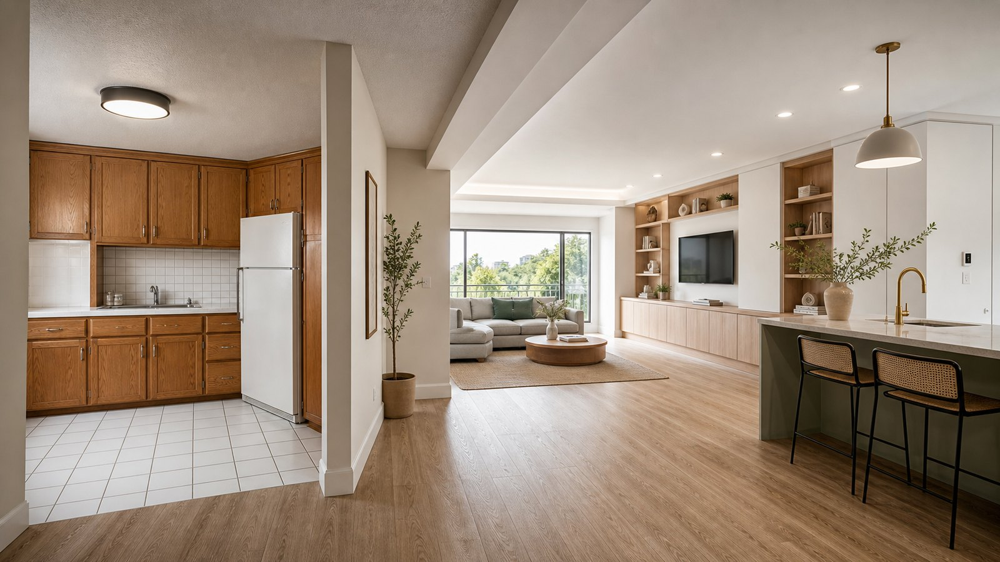

부분 리모델링 vs 전체 리모델링 — 우리 집엔 뭐가 유리할까?

욕실만? 주방만? 아니면 한 번에 전체? 같은 예산이라도 순서를 잘못 잡으면 두 번 공사하게 됩니다. 부분과 전체의 갈림길에서 확인할 기준을 정리했습니다.
먼저: 거주 계획부터
이 집에 몇 년을 더 살지가 가장 큰 기준입니다. 5년 이상 살 계획이면 전체 공사가 두 번 공사보다 결과적으로 저렴한 경우가 많고, 2~3년 내 이사·매도 계획이 있다면 손상 부위 중심의 부분 공사가 합리적입니다.
부분 공사가 유리한 경우
구조와 배관은 멀쩡한데 마감만 낡았을 때입니다. 도배·바닥·조명 교체만으로도 체감이 크게 달라지고, 욕실·주방처럼 물 쓰는 공간 한 곳만 손보는 것도 대표적인 부분 공사입니다. 공사 기간이 짧아 거주 중 시공이 가능한 것도 장점입니다.
전체 공사를 검토해야 하는 경우
20년 이상 된 집에서 배관·전기까지 손대야 한다면 부분 공사를 반복하는 것보다 한 번에 여는 것이 낫습니다. 철거·보양·양생 같은 공통 비용이 공사마다 반복되기 때문에, 나눠 할수록 총액은 커지는 구조입니다.
순서를 잘못 잡으면 두 번 공사한다
바닥을 새로 깔고 나서 샷시를 바꾸면 바닥 가장자리를 다시 손대야 하고, 도배 후에 전기 공사를 하면 벽을 다시 뚫게 됩니다. 부분 공사라도 샷시 → 설비·전기 → 목공 → 타일·욕실 → 바닥 → 도배 순서의 큰 틀은 지켜야 재공사가 없습니다.
예산이 애매할 때의 우선순위
예산이 전체 공사에 못 미치면, 나중에 다시 열기 어려운 곳부터 하는 것이 원칙입니다. 배관·방수·샷시처럼 속에 숨는 공사를 먼저 하고, 도배·조명·가구처럼 나중에 얹기 쉬운 것은 뒤로 미루세요.
판단이 어렵다면
집 상태에 따라 답이 달라지는 문제라, 사진 몇 장과 평수·연식만 있어도 방향을 잡아드릴 수 있습니다. 간편 예상견적으로 부분·전체 범위별 금액대를 먼저 비교해 보고, 무료 방문 실측에서 확정하는 순서를 추천합니다.